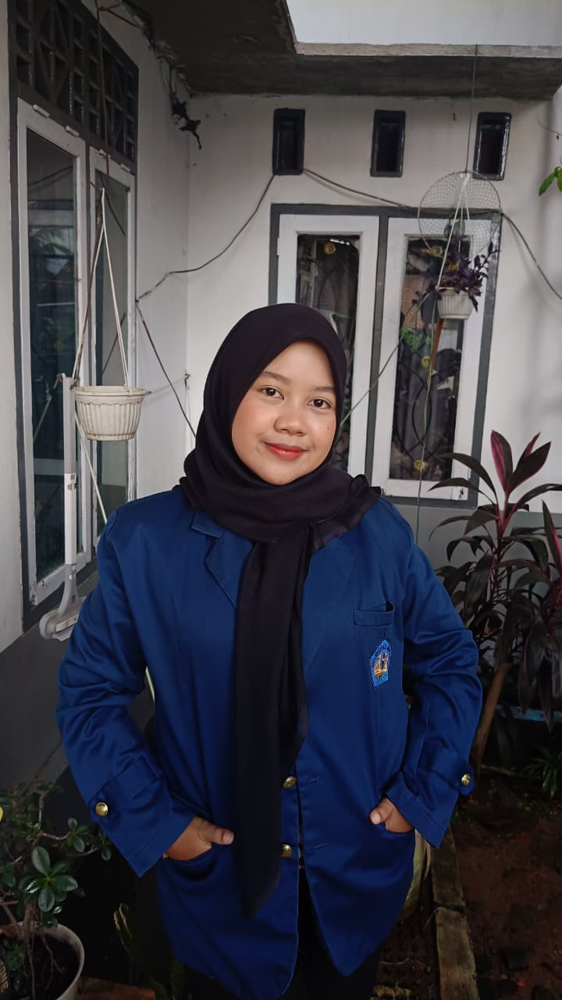

SISTEM INFORMASI GEOGRAFIS PENDIDIKAN
Platform WebGIS interaktif yang dirancang untuk menyajikan peta persebaran, ketersediaan fasilitas, serta indikator statistik makro infrastruktur dasar guna mendukung pemerataan mutu pendidikan di Kota Metro.
Gambaran umum kapasitas, daya tampung, dan cakupan wilayah spasial Sekolah Dasar di Kota Metro

Mahasiswa Calon Guru
Universitas Lampung